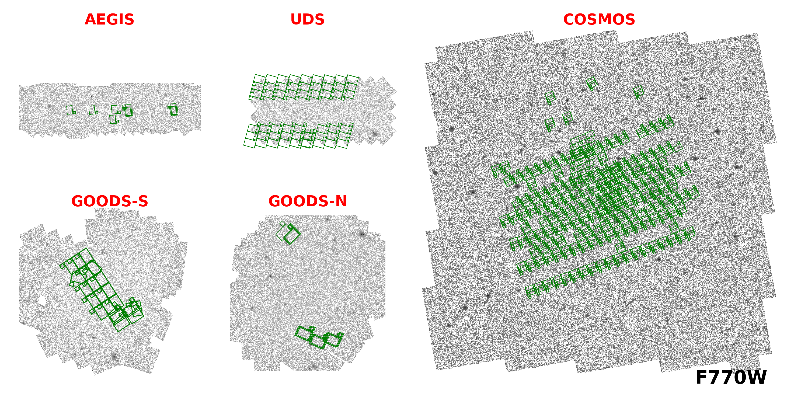
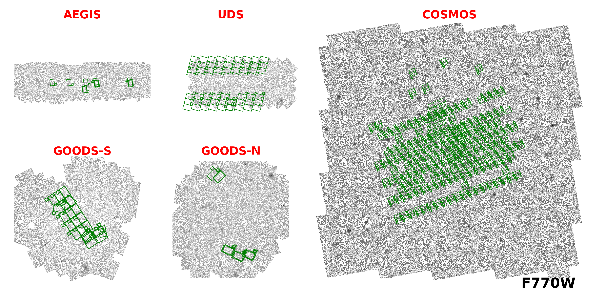

Coverage¶
 

COSMOS¶
Band |
F275W |
F435W |
F606W |
F814W |
F105W |
F125W |
F140W |
F160W |
|---|---|---|---|---|---|---|---|---|
Area (arcmin^2) |
115.02 |
138.22 |
274.69 |
503.99 |
53.54 |
221.25 |
153.57 |
254.68 |
Band |
F090W |
F115W |
F150W |
F200W |
F212N |
F250M |
F277W |
F335M |
F356W |
F410M |
F444W |
F444W_F466N |
F444W_F470N |
|---|---|---|---|---|---|---|---|---|---|---|---|---|---|
Area (arcmin^2) |
150.87 |
477.63 |
476.78 |
210.00 |
62.51 |
10.14 |
477.94 |
10.14 |
211.48 |
147.42 |
477.52 |
62.82 |
61.45 |
Band |
F770W |
F1000W |
F1800W |
F2100W |
|---|---|---|---|---|
Area (arcmin^2) |
265.74 |
17.08 |
111.04 |
16.96 |
From: pro1727, pro1810, pro1837, pro1840, pro2321, pro2514, pro3990, pro5893, pro6585
Locations: 10.47.1.34:/data3/JWST_SPRING/COSMOS/
EGS¶
Band |
F275W |
F435W |
F606W |
F814W |
F105W |
F125W |
F140W |
F160W |
|---|---|---|---|---|---|---|---|---|
Area (arcmin^2) |
141.07 |
147.74 |
410.26 |
459.78 |
28.16 |
206.33 |
143.19 |
206.40 |
Band |
F070W |
F090W |
F115W |
F140M |
F150W |
F182M |
F200W |
F210M |
F277W |
F335M |
F356W |
F360M |
F410M |
F430M |
F444W |
F460M |
F444W_F470N |
F480M |
|---|---|---|---|---|---|---|---|---|---|---|---|---|---|---|---|---|---|---|
Area (arcmin^2) |
8.98 |
118.09 |
108.06 |
16.94 |
102.77 |
25.62 |
112.10 |
15.62 |
101.58 |
9.21 |
110.91 |
9.21 |
100.57 |
18.29 |
121.92 |
9.20 |
96.47 |
18.27 |
Band |
F560W |
F770W |
F1000W |
F1280W |
F1500W |
F1800W |
F2100W |
|---|---|---|---|---|---|---|---|
Area (arcmin^2) |
10.45 |
78.58 |
77.04 |
11.83 |
78.20 |
10.41 |
73.10 |
From: pro1345, pro2234, pro2279, pro2514, pro2750, pro3990, pro4586, pro6434
Locations: 10.47.1.34:/data3/JWST_SPRING/EGS/
GOODSN¶
Band |
F275W |
F435W |
F606W |
F775W |
F814W |
F850LP |
|---|---|---|---|---|---|---|
Area (arcmin^2) |
107.87 |
179.78 |
246.30 |
269.02 |
366.22 |
267.17 |
Band |
F070W |
F090W |
F115W |
F150W |
F150W2_F162M |
F182M |
F187N |
F200W |
F210M |
F277W |
F300M |
F335M |
F356W |
F410M |
F430M |
F444W |
F444W_F405N |
F460M |
|---|---|---|---|---|---|---|---|---|---|---|---|---|---|---|---|---|---|---|
Area (arcmin^2) |
31.24 |
125.13 |
175.78 |
142.19 |
9.09 |
102.44 |
29.09 |
148.83 |
73.76 |
111.54 |
7.74 |
79.79 |
161.61 |
107.74 |
9.32 |
206.91 |
30.35 |
9.35 |
Band |
F560W |
F770W |
F1000W |
F1280W |
F1800W |
F2100W |
|---|---|---|---|---|---|---|
Area (arcmin^2) |
9.78 |
21.00 |
15.54 |
15.94 |
2.56 |
13.67 |
From: pro1181, pro1895, pro2514, pro2674, pro2926, pro3577, pro4762, pro5398, pro6434
Locations: 10.47.1.34:/data3/JWST_SPRING/GOODSN/
GOODSS¶
Band |
F275W |
F435W |
F606W |
F775W |
F814W |
F850LP |
F105W |
F125W |
F140W |
F160W |
|---|---|---|---|---|---|---|---|---|---|---|
Area (arcmin^2) |
54.10 |
183.82 |
270.82 |
226.74 |
371.57 |
348.78 |
104.92 |
135.33 |
156.00 |
135.33 |
Band |
F070W |
F090W |
F115W |
F140M |
F150W |
F150W2_F162M |
F182M |
F200W |
F210M |
F250M |
F277W |
F300M |
F335M |
F356W |
F410M |
F430M |
F444W |
F460M |
F480M |
|---|---|---|---|---|---|---|---|---|---|---|---|---|---|---|---|---|---|---|---|
Area (arcmin^2) |
9.15 |
107.56 |
162.85 |
9.09 |
163.51 |
9.30 |
68.19 |
165.09 |
66.06 |
16.08 |
160.23 |
9.46 |
50.48 |
171.16 |
101.53 |
10.28 |
180.54 |
10.28 |
10.28 |
From: pro1176, pro1180, pro1210, pro1283, pro1286, pro1895, pro1963, pro2079, pro2198, pro2514, pro2516, pro3215, pro3990, pro6541
Locations: 10.47.1.34:/data3/JWST_SPRING/GOODSS/
UDS¶
Band |
F606W |
F814W |
F105W |
F125W |
F140W |
F160W |
|---|---|---|---|---|---|---|
Area (arcmin^2) |
250.08 |
249.70 |
16.70 |
201.70 |
103.56 |
201.70 |
Band |
F090W |
F115W |
F140M |
F150W |
F182M |
F200W |
F250M |
F277W |
F335M |
F356W |
F410M |
F430M |
F444W |
F460M |
F480M |
|---|---|---|---|---|---|---|---|---|---|---|---|---|---|---|---|
Area (arcmin^2) |
257.91 |
265.51 |
49.42 |
254.36 |
6.77 |
241.59 |
12.11 |
252.21 |
7.44 |
244.51 |
223.81 |
42.96 |
253.71 |
42.53 |
7.44 |
Band |
F770W |
F1800W |
|---|---|---|
Area (arcmin^2) |
129.59 |
122.62 |
From pro1837, pro2514, pro3990
Locations: 10.47.1.34:/data3/JWST_SPRING/UDS/